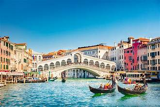

Venice rises from the Venetian Lagoon like a dream—its canals, bridges, and softly weathered palaces creating an atmosphere found nowhere else. The city’s unique blend of history, architecture, and art invites visitors to wander slowly and take in its quiet magic. From iconic landmarks to hidden courtyards, every turn reveals another layer of its timeless charm.
Whether you’re exploring Venice for the first time or returning to rediscover it, the city offers moments that stay with you long after you leave. Enjoy a quiet morning stroll along the canals, step into centuries-old churches filled with vibrant mosaics, or savor Venetian cuisine overlooking the water.
Venice rewards those who take time to look closely. Soft reflections on the Grand Canal, the craftsmanship of a carved window, or the scent of fresh pastries drifting from a café—these small encounters create the Venice that travelers fall in love with.